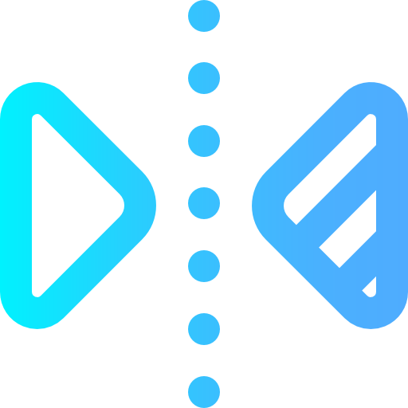

Jenis transformasi
Refleksi / Pencerminan

Coba kamu perhatikan saat kamu bercermin!
Bayangan kamu dicermin pasti sama persis dengan kamu, bahkan perilakunya. Jika kamu membalikkan badan saat bercermin, maka bayangan kamu juga akan berbaik badan.
Jika kamu mendekat ke cermin, maka bayangan kamu juga akan tampak mendekat

Konsep di atas, sangat mirip dengan pencerminan atau refleksi pada transformasi geometri
Refleksi adalah pemantulan objek melalui suatu titik, garis ataupun bidang yang disebut sumbu pencerminan.
Sifat Refleksi
Terdapat tiga sifat refleksi yang harus selalu diperhatikan.
Berikut adalah contoh pencerminan yang benar.
Perhatikan animasi berikut dimana trapesium dicerminkan pada garis vertikal

TES PERTAMA
Sebuah segitiga direfleksikan terhadap garis horizontal. Manakah yang memenuhi ketiga sifat refleski?
Sumbu Cermin
Sumbu cermin adalah pusat dari refleski atau pembalikan objek geomteri.
Pada contoh sebelumnya, sumbu cermin bisa berupa garis vertikal dan garis horizontal
Namun ternyata, sumbu cermin bisa berupa garis miring dan juga bisa sebuah titik loh.

Hampir sama bukan sifat sifat antara dengan percerminan pada sumbu garis dan titik.
Yang menjadi pembeda hanyalah dimana bayangan cermin seperti terbalik tapi tetap berhadapan dimana pada contoh Titik B dan Ttiti C seperti tertukar
TES PERTAMA
Sebuah trapesium direfleksikan terhadap sebuah titik. Manakah refleksi yang benar?
Kordinat Refleksi
Hal yang harus diperhatikan ketika melakukan refleksi adalah sifat refleksi dan sumbu cermin

Titik A ( 2 , 2 ) direfleksikan terhadap garis y = 0.
Diketahui:
Sumbu cerminnya adalah y = 0 artinya garis horizontal yang terletak sepanjang sumbu-x
Catatan:
Karena objek yang direfleksikan sebuah titik, dimana titik tidak memiliki bentuk maka yang diperhatikan hanyalah jarak objek ke sumbu cermin
Diperoleh:
Titik A' ( 2 , -2 )

Segitiga ABC dengan kordinat A ( 4 , 3 ), B ( 2 , 2 ), dan C ( 3 , -1 ) yang akan dicerminkan pada garis x = 1
Diketahui:
Sumbu cerminnya adalah x = 1 artinya garis vertikal. Sifat Refleksi yang diperhatikan seperti biasa yakni jarak, bentuk, dan harus berhadapan.
Diperoleh:
Segitiga A'B'C' dengan kordinat A' ( -2 , -3 ), B' ( 0 , 2 ), C' ( -1 , -1 )

Segitiga ABC dengan kordinat A ( -2 , 4 ), B ( -2 , 1 ), dan C ( -3 , 1 ) yang akan dicerminkan pada titik ( -1 , 1 )
Diketahui:
Sumbu cerminnya adalah titik ( -1 , 1 ) artinya sifat refleksi tetap berlaku namun bangun datar seperti terbalik
Diperoleh:
Segitiga A'B'C' dengan kordinat A' ( 1 , -2 ), B' ( 0 , 1 ), C' ( 1 , 1 )
TES KETIGA
Segitiga berwarna abu abu di bawah direfleksikan terhadap garis y = x
Pindahkan segitiga hijau hingga membentuk segitiga hasil refleksinya